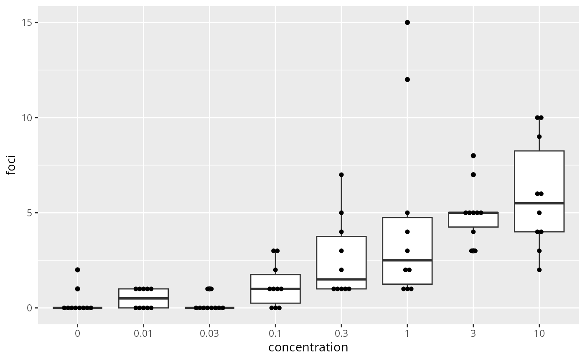
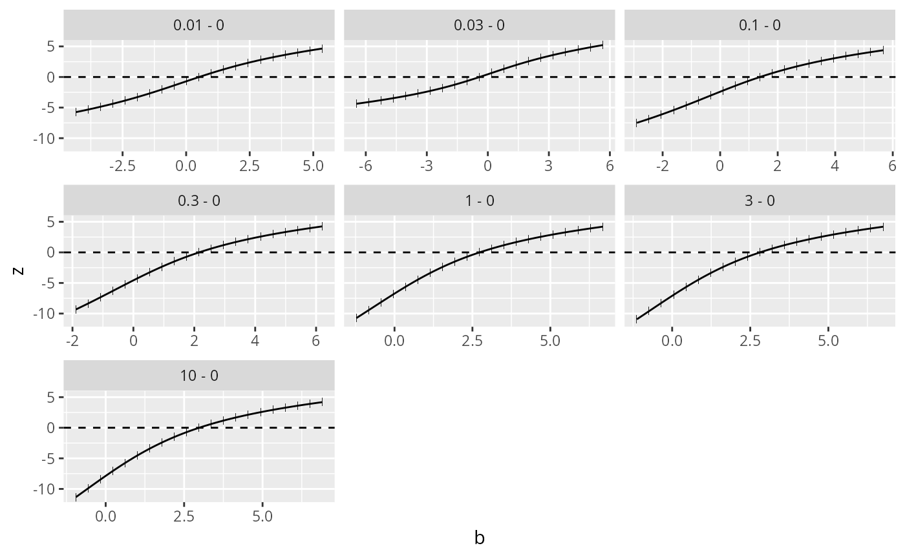
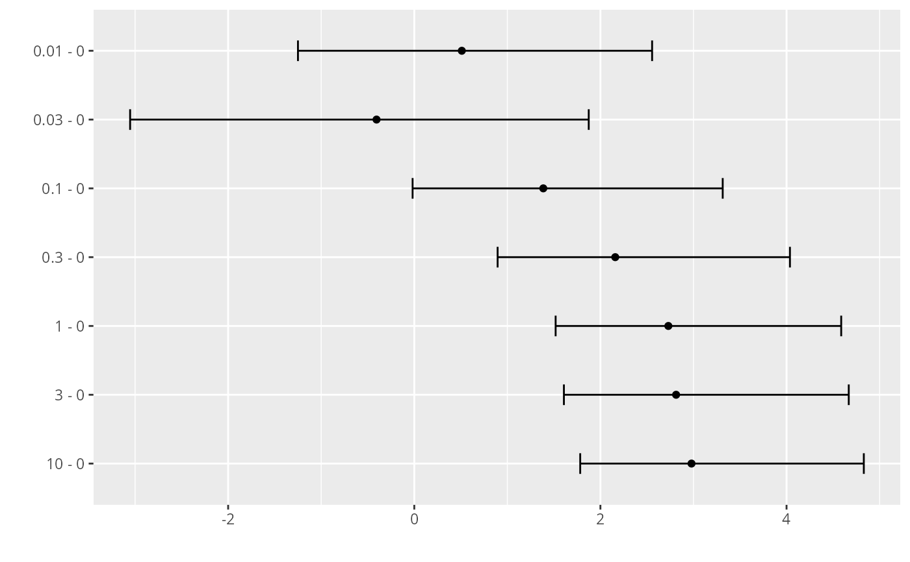

mcprofile.RdCalculates signed root deviance profiles given a glm or lm object. The profiled parameters of interest are defined by providing a contrast matrix.
mcprofile(object, CM, control = mcprofileControl(), grid = NULL)
# S3 method for class 'glm'
mcprofile(object, CM, control = mcprofileControl(),
grid = NULL)
# S3 method for class 'lm'
mcprofile(object, CM, control = mcprofileControl(),
grid = NULL)A contrast matrix for the definition of parameter linear combinations (CM %*% coefficients(object)). The number of columns should be equal to the number of estimated parameters. Providing row names is recommendable.
A list with control arguments. See mcprofileControl.
A matrix or list with profile support coordinates. Each column of the matrix or slot in a list corresponds to a row in the contrast matrix, each row of the grid matrix or element of a numeric vector in each list slot corresponds to a candidate of the contrast parameter. If NULL (default), a grid is found automatically similar to function profile.glm.
An object of class mcprofile. The slot srdp contains the profiled signed root deviance statistics. The optpar slot contains a matrix with profiled parameter estimates.
The profiles are calculates separately for each row of the contrast matrix. The profiles are calculated by constrained IRWLS optimization, implemented in function orglm, using the quadratic programming algorithm of package quadprog. Models with aliased (NA) coefficients are not supported; refit the model without the redundant terms.
#######################################
## cell transformation assay example ##
#######################################
str(cta)
#> 'data.frame': 80 obs. of 2 variables:
#> $ conc: num 0 0 0 0 0 0 0 0 0 0 ...
#> $ foci: int 0 1 0 0 0 0 0 0 0 2 ...
## change class of cta$conc into factor
cta$concf <- factor(cta$conc, levels=unique(cta$conc))
ggplot(cta, aes(y=foci, x=concf)) +
geom_boxplot() +
geom_dotplot(binaxis = "y", stackdir = "center", binwidth = 0.2) +
xlab("concentration")

# glm fit assuming a Poisson distribution for foci counts
# parameter estimation on the log link
# removing the intercept
fm <- glm(foci ~ concf-1, data=cta, family=poisson(link="log"))
### Comparing each dose to the control by Dunnett-type comparisons
# Constructing contrast matrix
library(multcomp)
CM <- contrMat(table(cta$concf), type="Dunnett")
# calculating signed root deviance profiles
(dmcp <- mcprofile(fm, CM))
#>
#> Multiple Contrast Profiles
#>
#> Estimate Std.err
#> 0.01 - 0 0.511 0.730
#> 0.03 - 0 -0.405 0.913
#> 0.1 - 0 1.386 0.645
#> 0.3 - 0 2.159 0.610
#> 1 - 0 2.730 0.596
#> 3 - 0 2.813 0.594
#> 10 - 0 2.979 0.592
#>
# plot profiles
plot(dmcp)

# confidence intervals
(ci <- confint(dmcp))
#>
#> mcprofile - Confidence Intervals
#>
#> level: 0.95
#> adjustment: single-step
#>
#> Estimate lower upper
#> 0.01 - 0 0.511 -1.2498 2.56
#> 0.03 - 0 -0.405 -3.0534 1.87
#> 0.1 - 0 1.386 -0.0179 3.31
#> 0.3 - 0 2.159 0.8955 4.04
#> 1 - 0 2.730 1.5189 4.59
#> 3 - 0 2.813 1.6078 4.67
#> 10 - 0 2.979 1.7830 4.83
#>
plot(ci)
#> `height` was translated to `width`.
